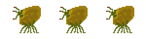

Release Date: December 7, 2022
Platforms: WebGL, Win
Number of Developers: 4
Length of Development: 9 Weeks
Budget: $0
Development Tools: Unity (v. 2021.3.11f1), Aseprite, Photoshop
Nine weeks ago, we began working on our game with a simple theme of "potatoes." Two months and three playtests later, we released the final version of our game on December 7, 2022. This section documents the postmortem of our game with regards to some of the things that went right and some of the things that went wrong with our game development.
To view our original Postmortem presentaion slides, click here
To view our original Game presentaion slides, click here
